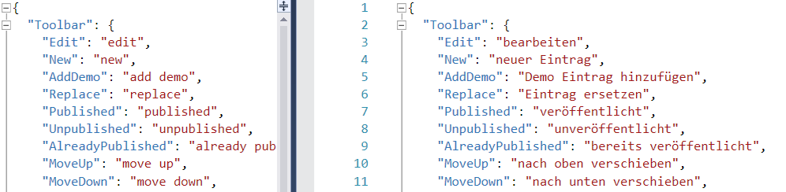

Contribute to 2sxc - Translations

This is a guide to help you understand how to contribute to the translations of 2sxc and EAV.
Note
Translating 2sxc into any language takes less than an hour. So we're asking you to help us go beyond the 5 languages we have so far.
Please help 🙏
Background
2sxc and EAV are used in many countries and languages, and we want to make sure that the system is available in as many languages as possible.
Since almost all the UIs are built in JavaScript, most of the translations are in JSON files. Here is a list of things that could be translated:
- Nothing to translate
- The core
$2sxcJS library doesn't contain any texts to translate
- The core
- What you can Contribute easily 🌟
- The
inpageedit UI contains labels on toolbars and various messages the editor should see - The Edit UI dialog contains texts like button labels or WYSIWYG labels
- The
- Translation not expected
- The server projects contains various texts which only the system-admin should see, and for now we assume this person understands english
- The Admin UI is currently english only, and we don't plan to change this in the near future
- Standard Apps can be translated, but it's a bit more difficult
- Each App can be multi-language - the main one to localize is usually the
ContentApp
- Each App can be multi-language - the main one to localize is usually the
Tip
If you're interested in translating and need help, just contact us on info-2sxc-org.
Contribute Translations to Toolbars and Inpage UIs
In general, you can just make the changes and use pull-request to submit them. If you are not familiar with pull-requests, you can also just send us the file to info-2sxc-org and we will add it to the system.
- The files are located in /projects/inpage/i18n
- The files are in JSON format
- The files are named like
en.jsonfor english,de.jsonfor german, etc. - For a language to work, it must also be added to the
translationsarray here - If a key is missing in a language, the system will automatically use the english fallback
Contribute a New Language
- Copy the
en.jsonfile and rename it to your language, likeid.json(Indonesian) - Translate it and use a pull-request, or send it to info 2sxc org
- We will add it to the system and activate the language code
Update an Existing Language
Best do this using a pull-request. If you don't know what this means or don't know how to do it, then just download the file, translate it and send it to info 2sxc org.
Contribute Translations to the Edit UI Dialogs
- The files are located in /projects/eav-ui/src/app/edit/assets/i18n
- The files are in JSON format
- The files are named like
en.jsonfor english,de.jsonfor german, etc. - Basically adding the json file will make the system use it - if the UI is in that language
- If a language is missing OR a key is missing in a language, the system will use the english version automatically
Contribute a New Language
- Copy the
en.jsonfile and rename it to your language, likeid.json(Indonesian) - Translate it and use a pull-request, or send it to info 2sxc org
- We will add it to the system and activate the language code
Update an Existing Language
Best do this using a pull-request. If you don't know what this means or don't know how to do it, then just download the file, translate it and send it to info 2sxc org.
Contribute App Translations (eg. the Content App)
This is a bit more difficult, as it requires you to work in the template the App itself. If you're interested in this, please contact us on info-2sxc-org.